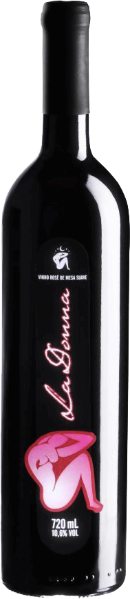
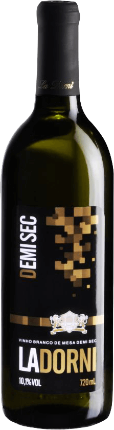
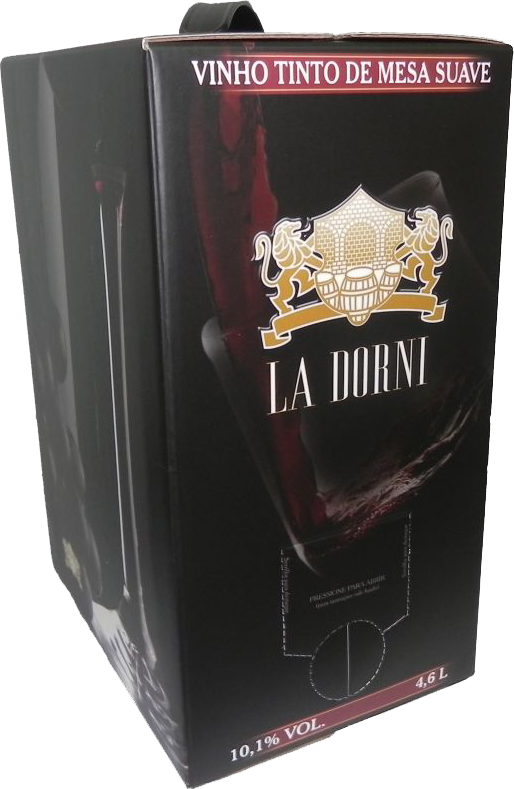
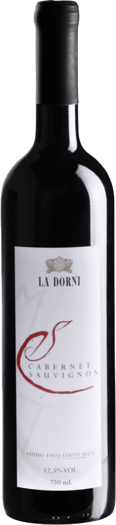

La Dorni Merlot possui uma bela cor rubi intensa com notas aromáticas frutadas, com toques de geléia e amora. Em boca apresenta-se seco aveludado, corpo médio sem taninos acentuados com retrogosto elegante Fechar Mais Informações
La Dorni Merlot possui uma bela cor rubi intensa com notas aromáticas frutadas, com toques de geléia e amora. Em boca apresenta-se seco aveludado, corpo médio sem taninos acentuados com retrogosto elegante  Fechar Mais Informações
La Dorni Merlot possui uma bela cor rubi intensa com notas aromáticas frutadas, com toques de geléia e amora. Em boca apresenta-se seco aveludado, corpo médio sem taninos acentuados com retrogosto elegante  Fechar Mais Informações
La Dorni Merlot possui uma bela cor rubi intensa com notas aromáticas frutadas, com toques de geléia e amora. Em boca apresenta-se seco aveludado, corpo médio sem taninos acentuados com retrogosto elegante  Fechar Mais Informações
La Dorni Cabernet Sauvignon possui uma bela cor rubi intensa com notas aromáticas frutadas, com toques de geléia e amora. Em boca apresenta-se seco aveludado, corpo médio sem taninos acentuados com retrogosto elegante  Fechar Mais Informações